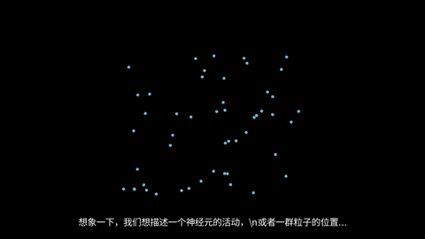
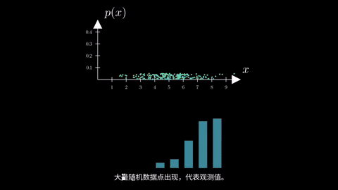
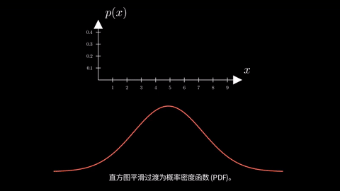

统计物理核心概念动画演示
场景 1: 概率与可观测量
1. 随机变量概念引入
想象一下，我们想描述一个神经元的活动，或者一群粒子的位置。 这些都是随机变量，它们的状态可以用一个向量 x∈RN 来表示。我们如何精确描述它们的行为呢？首先，我们需要概率密度函数 p(x)。
2. 数据点、坐标轴与直方图
收集大量随机数据点后，我们可以将它们在坐标系中可视化。通过统计落在不同区间内的数据点数量，可以构建直方图，初步展现数据的分布情况。
3. 直方图到PDF及性质
当数据量足够大且区间划分足够细时，直方图可以平滑过渡为连续的概率密度函数 (PDF) P(x)。PDF描述了随机变量在某一点附近取值的相对可能性。其总积分为1，表示随机变量取所有可能值的总概率为1。
4. 可观测量的概念与测量装置
对于一个物理系统，我们通常关心某些特定的物理量，称为可观测量，例如能量、位置或速度。动画中展示了一个抽象的测量装置，它可以探测系统的某个特性。
5. 测量过程与期望值

测量过程会得到可观测量的具体数值。由于系统的随机性，多次测量结果可能不同。可观测量的期望值（或平均值）是通过其概率密度函数 P(x) 对所有可能状态 f(x) 进行加权平均得到的。
场景 2: 矩与累积量
1. 矩：均值与方差

我们从概率分布 P(x) 开始。第一个矩是均值 (μ)，它定位了分布的中心。第二个中心矩是方差 (σ²)，它度量了分布的离散程度或宽度。
2. 高阶矩：偏度与峰度

更高阶的矩描述分布的形状。偏度衡量分布的不对称性，峰度则描述其峰部的尖锐程度和尾部的厚度。
3. 矩的局限性：相同矩，不同形

然而，仅靠矩有时会产生误导。这两个截然不同的分布拥有完全相同的均值和方差，但它们的形状却大相径庭。
4. 累积量：描述形状的新视角

为了更好地区分分布形状，我们引入累积量 (κ)。第一累积量 (κ₁) 是均值，第二累积量 (κ₂) 是方差。
5. 高阶累积量：洞察细微差异

关键在于高阶累积量 (κ₃, κ₄, ...)。它们能捕捉到简单的均值和方差所忽略的分布形状细节，从而有效区分那些仅凭低阶矩看似相同的分布。